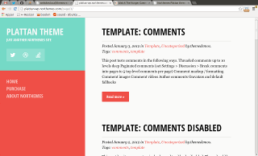
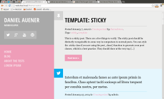
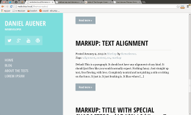
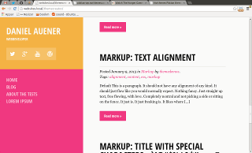
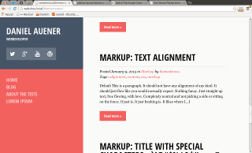
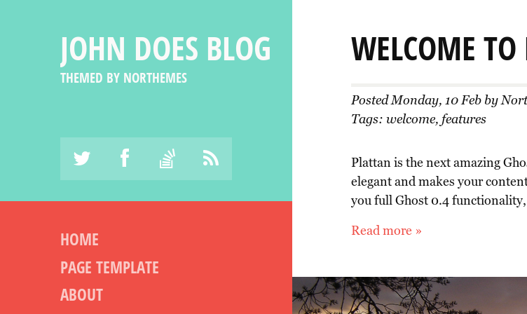
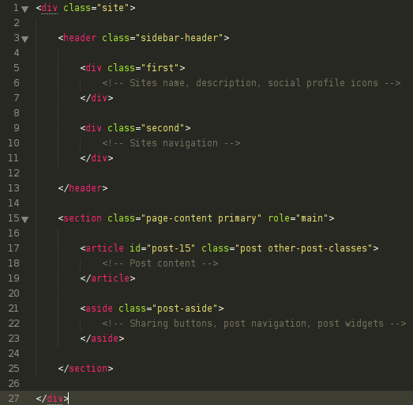

“Plattan” Documentation by northemes.com (@danielauener & @pixelcrook) - v1.0
“Plattan”
Created: 2014-02-14
By: northemes.com
Email: info@northemes.com
Thank you for purchasing our theme. If you have any questions that are beyond the scope of this help file, please feel free to email via our user page contact form here. Thanks so much!
Table of Contents
- Design
- Featured post, images and Post formats
- Customization
- HTML Structure
- SCSS Files and Structure
- Icon font
- Use grunt
- Sources and Credits
A) Design - top
The focus of this theme is content, so our goal was a responsive design without any noise or disturbing elements. In desktop view there is no header or footer. The theme is divided in a fixed column to the left, which contains some general elements like title, the authors social profile pages and a navigation. The second column on the right holds the currently displayed post or post-list.
Be careful with adding too much content (like a long menu), to the left-column. Because it is fixed, there will be no scroll on low screens with, say 1200x786 pixels or similar.
On smaller screens the left column becomes a minimized header with a hidden menu.
B) Featured post, images and Post formats - top
Ghost 0.4 gave us featured posts, and now we are giving them to
you. Make a post featured in the admin area, and it will look
like this in your blog:
"Plattan" supports post thumbnails as well. Just be sure the
image i the absolutely first thing in your post, then it will
show up in the post list and in the post, as featured image.

When we build "Plattan" we wanted to give you a little extra:
Post formats. As Ghost doesn't have native support for them, we
made use of the tag-functionallity. So to get the post-formats,
you just give your post one of the following tags:
format-tweet, format-quote, format-link
They look ike this:
The quote-format is somewhat special, the title of the post gets printed under the quote, as the source of the quote. The tweet-format just hides the title.
C) Customization - top
"Plattan" comes with 6 color schemes. In the theme demo you can test all color schemes with the color picker. On your own blog you might want to choose one of the schemes pemanently. In the downloaded theme there is no color picker, unless you use the file assets/js/scripts-with-cp.min.js as yuor main js file. To permanently set a color scheme, you make one of the assets/css/style-x.css to your main css file: assets/css/style.css. Here are all possible schemes:

plattan/css/style-0.css

plattan/css/style-1.css

plattan/css/style-2.css

plattan/css/style-3.css

plattan/css/style-4.css

plattan/css/style-5.css
"Plattan" gives you a couple of more possibilities for customization. Of course there is the blog title and description. You change them via the Ghost admin interface. Then there are the social icons. We've layoutet for a maximum of four icons, which are placed under the title and description. To change them, open the file at /content/themes/plattan/partials/header.hbs. Edit the links in the social-icons-div.
<div class="social-icons">
<a href="http://twitter.com/northemes" title="Northemes on twitter">k</a>
<a href="http://facebook.com" title="Facebook">j</a>
<a href="http://stackoverflow.com" title="stackoverflow">s</a>
<a href="{{@blog.url}}/rss/" title="Northemes on twitter">v</a>
</div>

The next thing to adjust would be the menu. Since "Plattan" is fully
Ghost 0.4 compatible it has a template for static pages, which you
might want to link in the menu. Even the menu is located in the
/content/themes/plattan/partials/header.hbs file. Search
after the ul with the main-menu class:
<ul class="main-menu">
<li class="menu-item">
<a href="{{@blog.url}}">Home</a>
</li>
<li class="menu-item">
<a href="{{@blog.url}}/plattan-page-template/">Page template</a>
</li>
<li class="menu-item">
<a href="http://www.northemes.com">About</a>
</li>
</ul>
You surely want to provide comment functionality with your blog. We provide our themes with disqus, the amazing comment API. But we want to give you the possibility to decide. So for activating/deactivating comments, open /content/themes/plattan/default.hbs and search for a javascript variable called 'disqus'. Just set activated to false or true and provide your disqus username if you want to show comments.
D) HTML Structure - top
Note: Some Mac-users had difficulties to edit the .hbs files in the theme with TextEdit. However, they could properly edit the files with the textwrangler editor.
To properly change the themes css you have to know a little about the general HTML-structure of the theme. The fixed sidebar's content is within a div with an class of "sidebar-header", which is divided in two equaly high sections with the class names "first" and "second".
All of the information within the main content area is nested within a div with an class of "primary". The general template structure is the same throughout the template. Here is the general structure.

E) SCSS Files and Structure - top
All the themes CSS is compiled from SASS/SCSS stylesheets. You find them in the /content/themes/plattan/assets/scss directory. The style.scss file is the main file, which gets compiled to the themes style.css file. It includes the underscored files in the same directory, which each handle a separate part of the layout. The names should be self-explaining, however a short overview in including order follows.
- _settings.scss and _base.scss
-
They imports some libraries like a reset-stylsheet,
basic typography, a grid and utilities. It also defines the main
colors of the themes, basic HTML-element styling and
some standard css-classes.
- _typography.scss
-
Defines all fonts, typography related mixins and
HTML-element styles. Defines even some font-size
variables.
- _header.scss
-
Contains the header styles.
- _content.scss
-
Contains the basic content styles for posts and pages.
- _post-formats.scss
-
Extends the content styling with styling for multiple
post formats.
- _footer.scss
-
Contains the footer styles.
To compile the SCSS files use your favourite precompiling tool. We use grunt and provide a basic grunt-configuration with the theme. So if you are using grunt you can start right away, after reading the grunt section.
F) Icon font - top
Icon fonts are great and we provide an default one with this theme. Here the available icons with char-codes:
$icons: ( 'quote' 'a', 'gallery' 'b', 'image' 'c', 'audio' 'd', 'video' 'e', 'pinterest' 'f', 'category' 'g', 'link' 'h', 'comment' 'i', 'facebook' 'j', 'twitter' 'k', 'google' 'l', 'linkedin' 'm', 'github' 'n', 'youtube' 'o', 'dribbble' 'p', 'skype' 'q', 'instagram' 'r', 'stackoverflow' 's', 'tubmlr' 't', 'foursquare' 'u', 'rss' 'v', 'tag' 'w', 'color' 'x', 'wordpress' 'y', 'pin' 'z', 'pen' '\e600', 'menu' '\e601', 'collapse' '\e602' );
If you want to replace the icon-font with your own, we used our favourite icon-font generator: Icomoon.
F) Use grunt - top
This theme provides a basic grunt configuration, as we self use
grunt to manage our tasks. The gruntfile.js is locatet in
/grunt/gruntfile.js.
To setup grunt, go to the grunt directory and run
npm install --save-dev
After installing all node modules you can watch your files for changes while you are editing, with a simple grunt watch. Or you compiling them manually by just running grunt.
G) Sources and Credits - top
We've used the following third party scripts and tools and really tried to don't forget one.
- bourbon
- bourbon-neat
- grunt
- grunt-contrib-jshint
- grunt-contrib-sass
- grunt-contrib-uglify
- grunt-contrib-watch
- grunt-notify
- grunt-sass
- JQuery
- Icomoon
- Themeforest documentation template
Once again, thank you so much for purchasing this theme. As said at the beginning, we'd be glad to help you if you have any questions relating to this theme. No guarantees, but we'll do our best to assist. If you have a more general question relating to the themes on ThemeForest, you might consider visiting the forums and asking your question in the "Item Discussion" section.
northemes.com